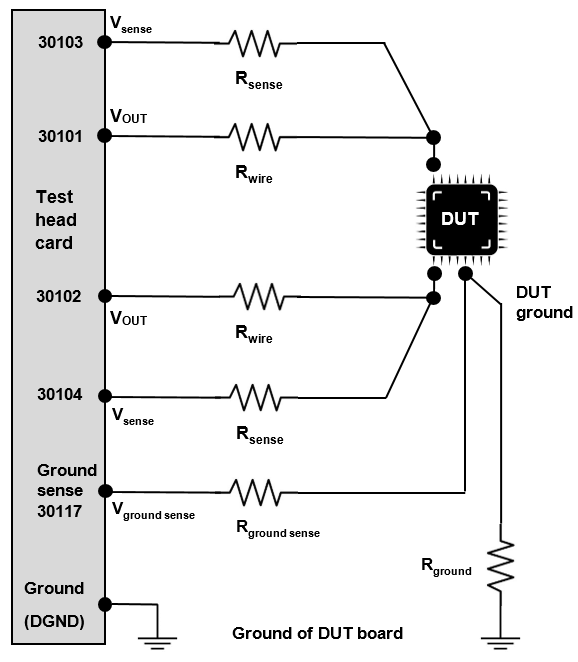

Pin Scale 5000 ground sensing
Pin Scale 5000 channels support remote sensing of the ground (DGND) connections via separate pins. Use the ground sense connections to the DUT to compensate the voltage drop on the return path both for force and measure operations. The ground sense pins are shared by 16 channels on the SD and HD pogo cable assembly and are shared by 32 channels on the VHD pogo cable assembly.
Ground sense provides the ability to sense the DUT ground for all measurements, and to have driver levels adapted.
In standard (STD) and high density (HD) pogo blocks, one pin per logical board of 16 pins is reserved to sense the DUT ground. In case of very high density (VHD) pogo blocks, it is one pin per 32 pogo pins which is connected to ground sense. For the assignment of ground sense pins to the groups of 16 pins, refer to Pin Scale 5000 pogo pin assignment.
If you need remote sensing on ground, it is desirable to have pogo pins of the pogo block which share this ground sense pin connected to one site only. Sites cannot share a ground sense pin. If you cannot follow this rule, remote sensing on ground is supported only up to the common DGND plane of the affected sites. This means that if a ground sense pin is shared by two or more sites, the voltage drop on the common DGND lines of the pogo cable can be compensated but not the voltage drop of the connections from the DUT board to the DUT. Hence, the connection to DGND should be made as close as possible to the DUT.
DUT board design for PS5000 should take this already into account for best accuracy.
The ground sense editor allows you to configure the ground sense pogo(s) for each sites, when using the Pin Scale 5000 card.

Pin no. 17 is the DGND pin of SD and HD pogo blocks, pin no. 33 is the DGND pin of VHD pogo blocks.
If the ground sense pogo pin is specified it will be used for all channels of the logical board else local ground will be used.
Functional changes
- Introduced in SmarTest 7.10.3